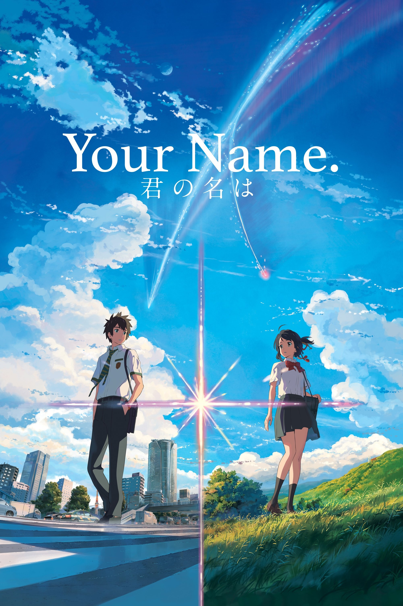

剧情简介
STORY

在远离大都会的深山小镇糸守町，女高中生宫水三叶每天都过着忧郁的生活。身为镇长的父亲、神社的古老传统、同学们的目光——一切都让她感到束缚。她对着天空大喊：「来世请让我做东京的帅哥吧！」
而在东京市中心，高中生立花瀧每天打工、上学、和朋友玩耍，过着普通却充实的日子。某天清晨醒来，两人发现自己与一个素未谋面的人交换了身体。
起初，他们以为这只是一场奇怪的梦。但很快他们发现，每当入睡后，两人的灵魂就会互换——三叶变成了东京的男高中生瀧，瀧则变成了深山小镇的女高中生三叶。他们开始通过手机备忘录记录彼此的日常，在对方的生活中留下痕迹，渐渐对素未谋面的彼此产生了感情。
然而某天，身体交换突然停止了。瀧无法再联系到三叶。他决定凭借记忆中的风景，亲自去寻找那个小镇和那个女孩。
当他终于找到糸守町时，眼前的景象让他震惊——这个小镇在三年前已经被一颗分裂的彗星彻底摧毁，500 多人遇难，而宫水三叶的名字就写在遇难者名单上。原来，与瀧交换身体的三叶，是三年前的三叶。他们的交换不仅跨越了空间，更跨越了时间。
为了拯救三叶和小镇居民，瀧来到宫水神社的神体——山顶的环形火山口。在那里，他喝下了三叶制作的口嚼酒，再次与三叶交换了身体，回到了彗星坠落的那一天。
在黄昏之时（かたわれ時）——那个白天与黑夜交界、生者与死者相会的魔幻时刻——两人终于在山顶相见。他们跨越了三年的时差，跨越了生死，第一次真正地看见了彼此。
为了不忘记对方的名字，他们约定在彼此的手心写下名字。但黄昏结束，三叶消失前未能写下自己的名字，而是在瀧的手心写下了——「すきだ」（喜欢你）。而瀧在三叶手心写的不是自己的名字，是「……」。
时间流逝，两人都失去了关于彼此的记忆，只留下一种莫名的失落感——仿佛在寻找着什么，却不知道是什么。直到某天，在东京的某个车站，两辆并行的电车上，他们的目光再次相遇……